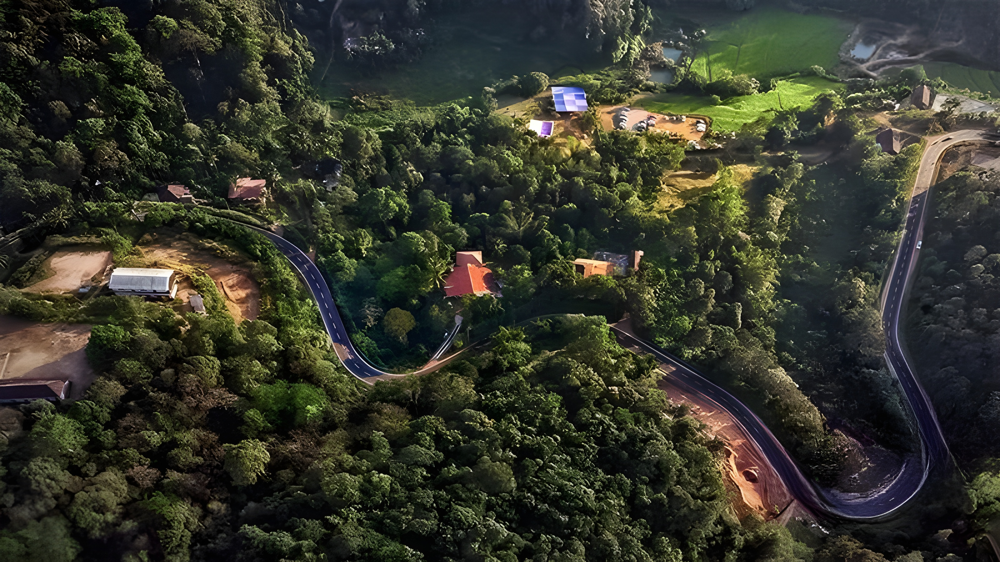
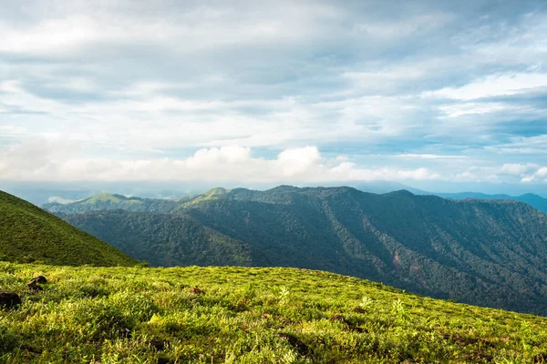
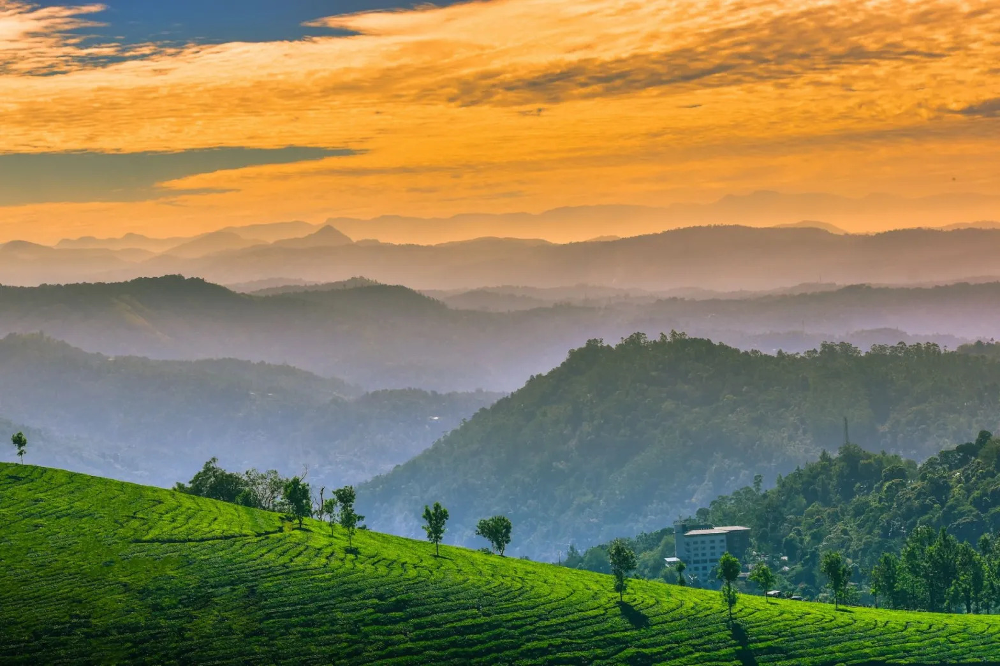
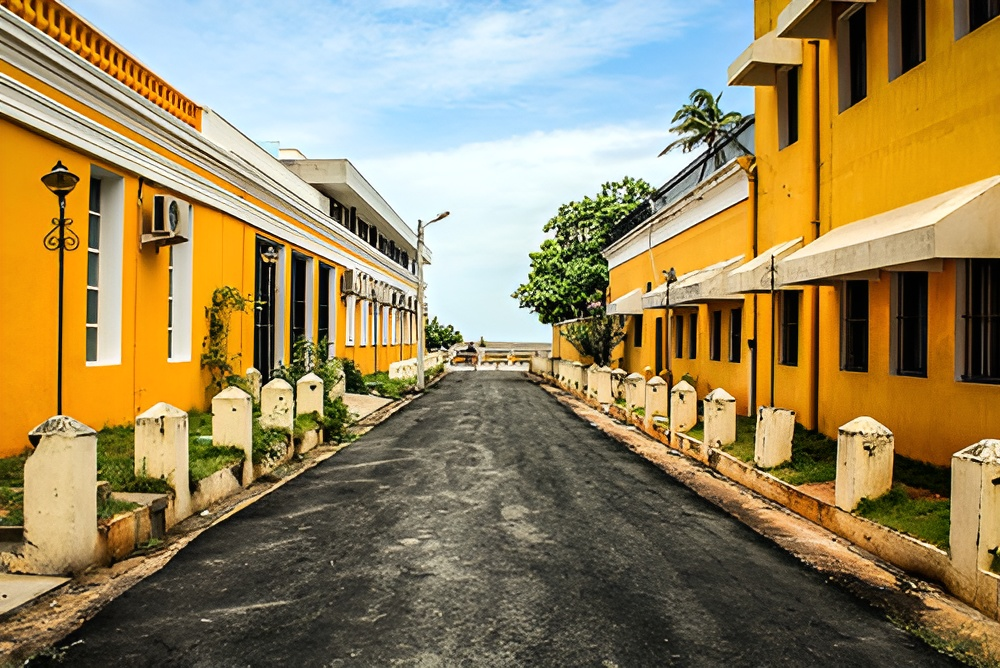
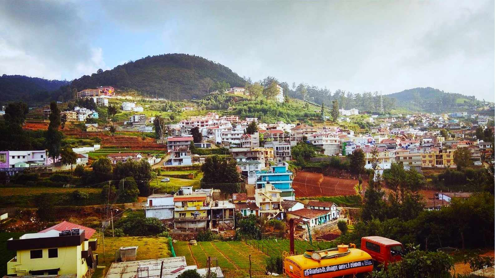
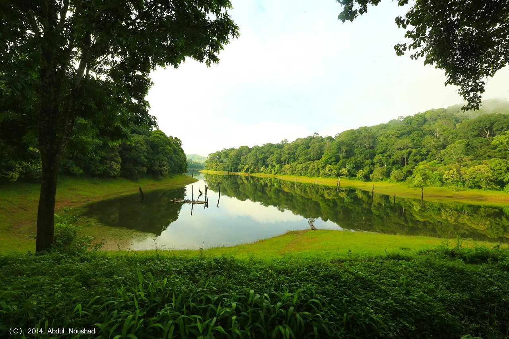

17 May 2024 4689 views
South India's landscape is still relatively undiscovered territory by the mass tourist wave and is only now slowly opening up to international travellers. One thing is for sure: you will be mesmerized as you travel the length and breadth of South India, discovering new places that foster pristine landscapes. It is a lovely destination for Solo trips to honeymoons to bike rides to family trips.
South India - Naturally Beautiful, Culturally Rich
Let's dive into some most beautiful places to visit in the South:
1.Coorg
Also commonly known as 'Scotland of India', is a beautiful hill station in Karnataka. With hazy temperatures all year long, it is a great tourist attraction. Coorg is heaven for hill station lovers. As Coorg is one of the places with the highest rainfalls in the country it is well known for its coffee and tea plantations. Apart from that, tourists are also attracted towards Abbey, Mallali and Iruppu Waterfalls, Pushpagiri, and Brahmagiri for trekking, the breathtaking view of the Harangi river.
Coorg also offers a variety of activities to enjoy with your stay.
Rafting : It has a 2.4km long rafting ranging from class 1 to class 4 waves.
Treks : Coorg offers a number of treks at Brahmagiri, Kumara Parvatha, Kopatty, Chomakund, Kakkabe, and many many more.
Apart from these, you can also enjoy kayaking and canoeing, fishing, paintball, and also some flying activities. It is perfect for adventure places in South India.
2.Wayanad
Wayanad, a village in Kerala is a heaven for those fellow travellers who want to take a break from the busy city life and spend some quality time close to nature and get a gist of some wildlife. This beautiful South Indian village offers every tourist attraction from dams, ancient temples, caves, wildlife sanctuary, etc. A nature lover should just not skip Kuruva Island and Pookode Lake. One can raft their way towards Kuruva Island and get lost into the serenity blessed by Mother Nature.

Wayanad has a wide range of cultural diversity. It offers the visitors Urav, the world of Bamboos, Urav: that provides a unique local musical instrument, The Thudi, the paintings by the Kattunayakan tribes, and the best of all, the archery expertise in Ambalavayal.
The nearest railway station to Wayanad is Kozhikode. It is a 110 km long drive, surrounded by the green beauty. The tourist attraction of South India starts from this road trip itself. Make sure to catch a window seat!
3.Chikmagalur
Known as the Coffee Land of Karnataka, India has its first-ever coffee plantation here. Another added benefit of visiting Chikmagalur is that they are known for their homestays. Situated in the western ghats, Chikmagalur is surrounded by thick forest with a suitable climate for vacation throughout the year.
Chikmagalur offers some of the most beautiful historical monuments of South India in the form of temples. Within 100 kms from Chikmagalur, there are some amazing domes in the form of Kalasa, Sringeri, Belavadi, Balehonnur, etc. Some of these monuments date back to the 12th Century. Apart from these, Chikmagalur also plays host to a number of natural parks and wildlife sanctuaries. These natural trials envelope within them a number of animals like elephants, tigers, leopards, boars, porcupines, gaurs, deers, etc.
Chikmagalur also has within it a number of waterfalls and all these just within connectivity of rails, airways as well as roadways!
3.Munnar
Situated in North East Kerala, Munnar is yet another beautiful South Indian hill station. It has been a very popular holiday spot since the British era. Also, it has also been a very common honeymoon spot.
Munnar is very popular for a particular flower called the Neelakurinji. This flora blooms once in twelve years. they are next expected to be seen in the year 2030. Anamudi is another tourist attraction in south India, situated in Munnar. It is the highest peak in the South which is at the height of 2695m.
You will also find one of the richest flora and fauna in Munnar in the form of lakes, tea museums, dams, sanctuaries, dairy farms, echo points, waterfalls, national park, etc. Blossom International Park, holding some rare and exotic flowers will add to the charm along with bird watching, roller skating, and paintball activities.
Cochin International Airport is the closest airport to Munnar. So get ready for a 125km long beautiful drive to Munnar.
5.Puducherry
Also known as Pondicherry, was one of the largest French colonies in India. Some people also lovingly call it India's French Colony. So if you want to explore some of the most exquisite French historical monuments in South India, you should not miss Puducherry.
cherry places host a number of religious monuments in the form of Temples. Mosques and Churches. Also one should spend a day at the Shri Aurobindo Ashram and at Auroville. They are good tourist places in South India, which allows you to meditate and get the peace we have all been searching for in the hodgepodge city life. One will also find a number of statues, scriptures, and museums in this Union Territory, owing to the connection it shares with the history.
Apart from the beautiful sea coasts and beaches, Puducherry has to offer it will also excite you towards the different gardens that this city holds. The botanical garden, the science garden, Ousteri wetland, and National Park are also some places that will excite you.
Puducherry is a full pack adventure place in south India. A bike ride from KK travels will ease your 135km long ride from Chennai International Airport to Puducherry.
6.Andaman & Nicobar Island
Situated in the Andaman Sea, Andaman and Nicobar Islands are heaven for people who enjoy beaches and other water activities. Its Capital Port Blair has been of historical importance dated back to World War II.
Andaman and Nicobar islands are a one-stop destination for all the fun you are looking for on a holiday. It has activities from scuba diving, Sea walking, seaplane ride, snorkeling, etc. and also amazing sightseeing like Havelock island, cellular jail in Port Blair (imprisoned a number of national leaders in the British era), Viper Island, etc

Andaman and Nicobar also offer a variety of flora and fauna to enjoy. Andaman and Nicobar have a noteworthy rubber plantation, mangrove creeks, Karmatang beach: also known as the Turtle Paradise, etc. Mount Harriet national park is a heritage for the flora and fauna this Island has to offer. The clean and crystal clear water entice everyone.
The best way to reach this Island is to catch a flight to Port Blair Airport. Or one can book a cruise ship for Kolkata, Chennai, or Vishakapatnam.
7.Mysore
The previous Capital city of Karnataka, Mysore is known as the Palace City of India. It is a very popular tourist place in South India for people who are big enthusiasts about Palaces and other structures. The palaces and gardens that Mysore holds are some of the best Historical Monuments of South India. Most of these monuments are from the Eighteenth and the Nineteenth Century. Hence, these monuments represent the Indian architecture of the British Era.

Palaces to visit: Mysore Palace, Lalitha Mahal, Jaganmohan Palace, and the Vijaylakshmi Vilas Mansion
Gardens to Visit: Brindavan garden, Jalbagh, Happy man Park and the Butterfly Park
Museums to Visit: Mysore sand sculpture Museum, Regional Museum of Natural History, Folklore Museum, Rail Museum, and Wax Museum.
Others Mysore Zoo, Ranganathittu Bird Sanctuary, Orient Research Institute, Chamundi Hills Temple, Infant Jesus Shrine, St. Philomena's Church, Shivanasamudra Falls, Bylakuppe.
The nearest airport to Mysore is the Bangalore International Airport. It is 170 kms away.
8.Ooty
Ooty is one of the most well-known hill stations in India. This hill station is known as Queen of Hills by the locals, is situated in Tamil Nadu, is surrounded by the Nilgiri Hills. And the best part of visiting Ooty is one can visit Ooty at any time of the year and every climate brings out a majestic climate to enjoy.
One unique offer that Ooty has is the breathtaking views of the Lake houses at the Ooty lake. It was constructed in the 19th Century and lets you explore the majestic Ooty valley and the Eucalyptus trees on the coast on Ooty lake. During the summer, boat races and pageantry are organized at this lake. Nilgiri Mountain Railway is a World Heritage Site that is another amazing tourist attraction of South India.
Ooty also offers a great variety of flora to its visitors. Hybrid tea roses, Miniature roses, ramblers, roses of colors such as green and black are some of the diversified flora. Apart from that Ooty also organizes an exhibit for the rare flowers. Ooty also offers a number of plant gardens and parks to its visitors. Also, the deer park is a recommended visit.
\ Ooty also is home to a number of exotic animal species. The Royal Bengal tigers, Indian Leopards, endangered Indian elephants, long-billed vulture, Indian white-rumped vulture are a few to be named. The North-Western and South-Eastern corners of the Nilgiri hills are protected for this wildlife.
Apart from all these natural beauties that Ooty holds, it also has some tribal huts, museums, and historical buildings which will lure you to make Ooty your home. the Stone house, St. Thomas Church, St. Stephen's Church, Toda huts, and the Tribal museums should make a sure place in your itinerary.
One can reach Ooty by either the Coimbatore Domestic Airport (88 kms) or the Bangalore Airport (295 kms) and then we advise you to hit the road to connect your spirits with all the beauty that the roadways have to offer.
9.Gokarna
Gokarna is yet another classic city to enjoy the beaches. It has a geographical location that crosses paths with the Arabian Sea as well as the Western Ghats. It is known as one of the seven important Hindu pilgrims centers, a large number of devotees worship Lord Shiva there.
Beaches such as Om beach, Half Moon Beach, Belekan beach, and Paradise beach are a few amazing beaches to visit. The Om beach is Shaped in the Hindu Om symbol. Gokarna also offers a number of activities like trekking, surfing, boating.

It is a lovely place to have a solo trip. Everything that Gokarna has to offer will surely provide you with a very relaxing weekend. The best way to reach Gokarna is to catch a train that drops you to the nearest station Ankola, which is 20 kms away from Gokarna.
10.Thekkady
Thekkady is situated in Kerala and is known most for its Periyar Tiger Reserve. It is the largest tiger reserve in our country. It also inhabits a number of endangered mammals, birds, reptiles, and amphibians. You can have an amazing elephant ride that has always been your dream.
Thekkady also hosts a number of adventures in the South Indian terrain. It has boating, trekking, jungle safaris, camping, etc. The best part of visiting Thekkady is that all these fun-filled adventures and sightseeing is compacted in only Periyar. Hence, one can spend less time going from place to place and can enjoy more of the time sightseeing.
The best way to reach Thekady is to take a train to Kottayam which is 114 kms away.
Author Bio
Anuj Seksaria
Moody Photographer. Marketer. Weird Funny. Can't do without Sky, Beaches, Travel and Tea.